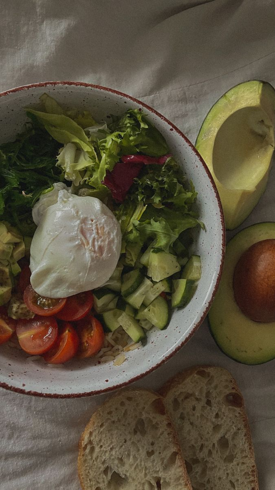
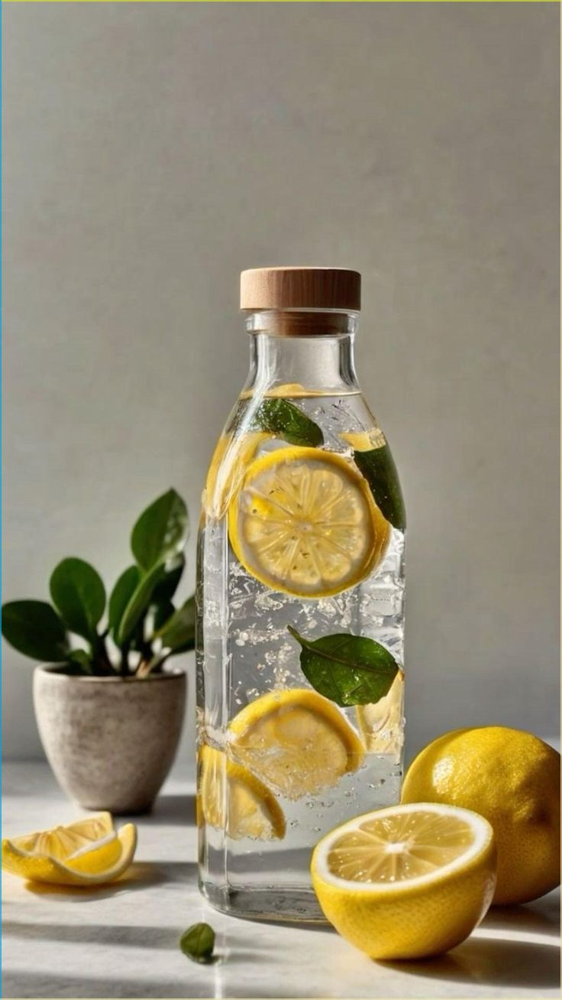
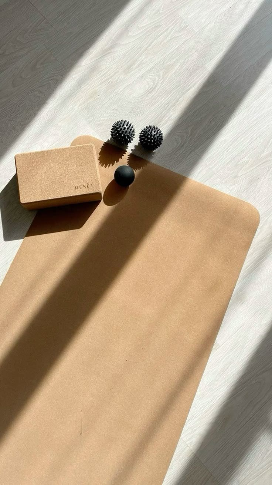

Добро пожаловать на сайт «Жить здорово»
В современном мире забота о здоровье стала важнейшей частью полноценной жизни. Мы живем в эпоху информационного потока: новости, соцсети, рабочие задачи постоянно отвлекают внимание и создают стресс. Учёные подчеркивают, что систематическая забота о здоровье, физическая активность и психическое благополучие крайне важны для качества жизни.Следуя принципам здорового образа жизни, Вы укрепите свой организм и улучшите своё самочувствие. Здоровые люди - это красивые люди. Доказано, что соблюдение ЗОЖ может заметно замедлить старение человека. Дело в том, что здоровая пища с содержанием антиоксидантов (это витамины группы Е, В, цинк и аскорбиновая кислота) обогащает клетки кислородом, а значит продлевает им молодость. Занятия спортом понижают уровень холестерина, что влечет замедление процесса атеросклероза сосудов. Отказ от курения и алкоголя предостережет от скорого появления морщин и старения кожи в целом. Препятствует старению устойчивая нервная система, которая вырабатывается только при правильном питании и здоровом образе жизни.
Сайт «Жить здорово» создан, чтобы быть вашим надежным путеводителем. Здесь собрана практичная, научно обоснованная информация, помогающая внедрять здоровые привычки в повседневную жизнь.
Чем полезен сайт
- Научно обоснованные статьи и советы по всем аспектам ЗОЖ
- Практические рекомендации, которые легко внедрить в повседневную жизнь
- Интерактивные подсказки «Совет дня» и «Попробуй прямо сегодня»
- Идеи для формирования полезных привычек
- Материалы, проверенные экспертами и современными исследованиями
Основные элементы здорового образа жизни

Питание
Правильное и сбалансированное питание — основа здоровья. Оно обеспечивает организм всеми необходимыми веществами, поддерживает иммунитет, уровень энергии и настроение.
💡 Совет дня: начните утро с питательного завтрака — омлет с овощами, каша с ягодами или смузи.
🔥 Попробуй прямо сегодня: добавьте свежий овощ или фрукт к каждому приему пищи.

Вода
Регулярное употребление чистой воды поддерживает обмен веществ, работу всех органов, выводит токсины и помогает сохранять ясность мыслей.
💡 Совет дня: держите бутылку воды под рукой и делайте маленькие глотки каждые 30–40 минут.
🔥 Попробуй прямо сегодня: начните день со стакана воды с лимоном.
Психология
Эмоциональное и психическое здоровье — важная часть ЗОЖ. Медитация, дыхательные практики и ведение дневника помогают справляться со стрессом и поддерживать позитивное настроение.
💡 Совет дня: уделите 10 минут дыхательной гимнастике или короткой медитации.
🔥 Попробуй прямо сегодня: запишите три вещи, за которые вы благодарны.

Физическая активность
Движение укрепляет сердце, мышцы и суставы, повышает выносливость и улучшает настроение. Даже небольшая регулярная активность положительно влияет на самочувствие.
💡 Совет дня: выделите хотя бы 20–30 минут на прогулку или лёгкую зарядку.
🔥 Попробуй прямо сегодня: выполните короткую серию упражнений дома или в офисе.